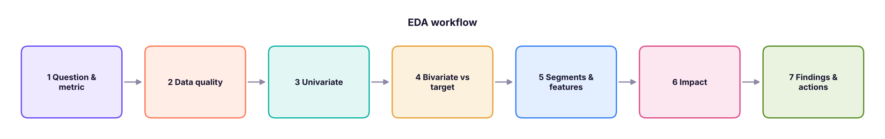
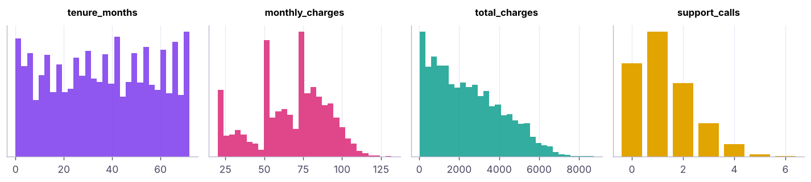
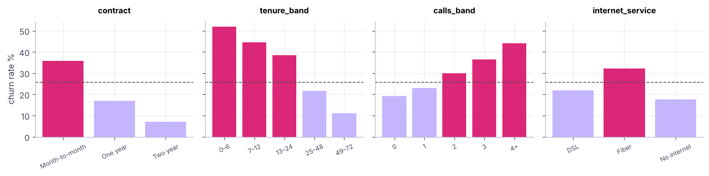
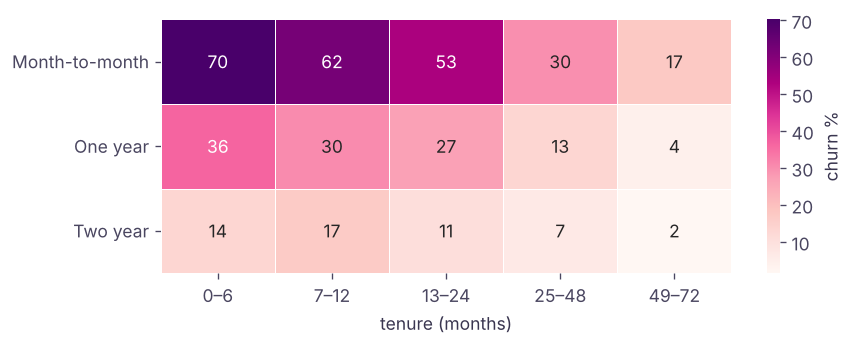

Exploratory Data Analysis (EDA) Case Study: Telecom Customer Churn
Run a complete, structured EDA on 3,000 telecom customers. Frame the question, check data quality, do univariate, bivariate and segment analysis, engineer features, quantify revenue at risk and finish with findings and recommendations: the template you will reuse for every dataset and for the ML churn model.
- Follow a repeatable EDA checklist from question to recommendation
- Check data quality and consistency between related columns
- Analyse univariate distributions and bivariate relationships with the target
- Build segments and quantify business impact (revenue at risk)
- Write findings as clear, numbered insights with actions
The EDA checklist

Business question. A telecom operator loses customers every month. Which customers churn, why, and where should retention money go first? Target: churn (Yes/No). Metric: churn rate = churned ÷ customers.
1. Load and first look
import pandas as pd, numpy as np, seaborn as sns, matplotlib.pyplot as plt
pd.set_option("display.max_columns", 20); pd.set_option("display.width", 160)
tc = pd.read_csv("telecom_churn.csv")
tc["churned"] = (tc["churn"] == "Yes").astype(int)
print(tc.shape); print(tc.head(3))
print(tc.dtypes.astype(str).to_dict())
print(f"Overall churn rate: {tc.churned.mean():.1%} ({tc.churned.sum()} of {len(tc)})")(3000, 11)
customer_id senior_citizen tenure_months contract internet_service payment_method monthly_charges total_charges support_calls churn churned
0 T00001 0 71 Two year Fiber Net banking 81.28 5848.06 1 No 0
1 T00002 1 56 Month-to-month Fiber Auto-debit 115.12 6482.44 0 No 0
2 T00003 0 38 Two year Fiber Auto-debit 85.90 3186.34 1 No 0
{'customer_id': 'str', 'senior_citizen': 'int64', 'tenure_months': 'int64', 'contract': 'str', 'internet_service': 'str', 'payment_method': 'str', 'monthly_charges': 'float64', 'total_charges': 'float64', 'support_calls': 'int64', 'churn': 'str', 'churned': 'int64'}
Overall churn rate: 25.7% (772 of 3000)2. Data quality
print("missing:", tc.isna().sum().sum(), "| duplicate ids:", tc.customer_id.duplicated().sum())
print(tc.describe().round(1).T[["min", "50%", "max", "mean"]])
for c in ["contract", "internet_service", "payment_method"]: print(c, tc[c].value_counts().to_dict())
gap = tc.total_charges - tc.tenure_months * tc.monthly_charges # consistency check between columns
print("total_charges − tenure × monthly: median", round(gap.median(), 1), "| 95% within ±", round(gap.abs().quantile(.95), 0))
print("tenure 0 customers:", (tc.tenure_months == 0).sum())missing: 0 | duplicate ids: 0
min 50% max mean
senior_citizen 0.0 0.0 1.0 0.2
tenure_months 0.0 36.0 72.0 36.1
monthly_charges 20.0 73.8 131.7 67.1
total_charges 19.6 2161.3 8724.4 2418.3
support_calls 0.0 1.0 6.0 1.3
churned 0.0 0.0 1.0 0.3
contract {'Month-to-month': 1690, 'One year': 739, 'Two year': 571}
internet_service {'Fiber': 1368, 'DSL': 1047, 'No internet': 585}
payment_method {'Card': 767, 'UPI': 753, 'Auto-debit': 746, 'Net banking': 734}
total_charges − tenure × monthly: median -0.8 | 95% within ± 189.0
tenure 0 customers: 45No missing values or duplicate IDs. total_charges roughly equals tenure × monthly charges (small gaps from price changes), so the columns are consistent. A few customers have tenure 0 (new joiners), which is valid.
3. Univariate analysis

4. Bivariate: each driver vs churn
def churn_by(col):
g = tc.groupby(col, observed=True)["churned"].agg(customers="size", churn_rate="mean")
g["churn_rate"] = (100 * g.churn_rate).round(1); g["lift"] = (g.churn_rate / (100 * tc.churned.mean())).round(2)
return g
for col in ["contract", "internet_service", "payment_method", "senior_citizen"]: print(churn_by(col), "\n") customers churn_rate lift
contract
Month-to-month 1690 35.9 1.40
One year 739 16.9 0.66
Two year 571 7.0 0.27
customers churn_rate lift
internet_service
DSL 1047 21.8 0.85
Fiber 1368 32.2 1.25
No internet 585 17.6 0.68
customers churn_rate lift
payment_method
Auto-debit 746 23.5 0.91
Card 767 26.3 1.02
Net banking 734 28.5 1.11
UPI 753 24.7 0.96
customers churn_rate lift
senior_citizen
0 2490 25.3 0.98
1 510 27.8 1.08Lift = segment churn ÷ overall churn. Lift 1.4 means 40% more likely to churn than average.
tc["tenure_band"] = pd.cut(tc.tenure_months, [0, 6, 12, 24, 48, 72], include_lowest=True, labels=["0–6", "7–12", "13–24", "25–48", "49–72"])
tc["calls_band"] = pd.cut(tc.support_calls, [-1, 0, 1, 2, 3, 10], labels=["0", "1", "2", "3", "4+"])
tc["charge_band"] = pd.qcut(tc.monthly_charges, 4, labels=["Q1 low", "Q2", "Q3", "Q4 high"])
for col in ["tenure_band", "calls_band", "charge_band"]: print(churn_by(col), "\n") customers churn_rate lift
tenure_band
0–6 318 51.9 2.02
7–12 238 44.5 1.73
13–24 452 38.5 1.50
25–48 1011 21.6 0.84
49–72 981 11.1 0.43
customers churn_rate lift
calls_band
0 822 19.1 0.74
1 1101 23.1 0.90
2 649 30.0 1.17
3 294 36.4 1.41
4+ 134 44.0 1.71
customers churn_rate lift
charge_band
Q1 low 781 19.0 0.74
Q2 719 20.2 0.78
Q3 750 29.9 1.16
Q4 high 750 34.0 1.32
Numeric drivers
print(tc.groupby("churn")[["tenure_months", "monthly_charges", "total_charges", "support_calls"]].median())
print(tc[["tenure_months", "monthly_charges", "support_calls", "senior_citizen", "churned"]].corr()["churned"].drop("churned").round(3).sort_values())tenure_months monthly_charges total_charges support_calls churn No 42.0 68.010 2445.905 1.0 Yes 21.0 75.405 1357.910 1.0 tenure_months -0.322 senior_citizen 0.022 monthly_charges 0.143 support_calls 0.153 Name: churned, dtype: float64
5. Segments: interactions matter
seg = tc.pivot_table(index="contract", columns="tenure_band", values="churned", aggfunc="mean", observed=True).mul(100).round(1)
print(seg)
cnt = tc.pivot_table(index="contract", columns="tenure_band", values="churned", aggfunc="size", observed=True)
print(cnt)tenure_band 0–6 7–12 13–24 25–48 49–72 contract Month-to-month 70.2 62.4 53.4 29.7 17.4 One year 36.5 30.3 26.9 13.4 4.3 Two year 13.5 17.0 10.7 6.8 1.5 tenure_band 0–6 7–12 13–24 25–48 49–72 contract Month-to-month 181 125 249 583 552 One year 85 66 119 238 231 Two year 52 47 84 190 198

hot = tc[(tc.contract == "Month-to-month") & (tc.tenure_months <= 12)]
fiber_calls = tc[(tc.internet_service == "Fiber") & (tc.support_calls >= 3)]
for name, d in [("Month-to-month, tenure ≤ 12", hot), ("Fiber with 3+ support calls", fiber_calls)]:
print(f"{name:32s} customers {len(d):4d} | churn {d.churned.mean():.1%} | lift {d.churned.mean() / tc.churned.mean():.2f}")Month-to-month, tenure ≤ 12 customers 306 | churn 67.0% | lift 2.60 Fiber with 3+ support calls customers 192 | churn 46.9% | lift 1.82
6. Business impact: revenue at risk
tc["monthly_revenue_lost"] = tc.monthly_charges * tc.churned
lost = tc.monthly_revenue_lost.sum()
print(f"Monthly revenue of churned customers: {lost:,.0f} ({lost / tc.monthly_charges.sum():.1%} of all monthly revenue)")
imp = tc.groupby("contract").agg(churners=("churned", "sum"), revenue_lost=("monthly_revenue_lost", "sum"))
imp["share_of_loss_%"] = (100 * imp.revenue_lost / lost).round(1)
print(imp.round(0))Monthly revenue of churned customers: 56,173 (27.9% of all monthly revenue)
churners revenue_lost share_of_loss_%
contract
Month-to-month 607 43293.0 77.0
One year 125 9763.0 17.0
Two year 40 3117.0 6.0Revenue numbers here are in the data's currency units per month; multiply by expected remaining lifetime to estimate lifetime value lost.
7. Findings and recommendations
- About 1 in 4 customers churn (25.7%), taking 27.9% of monthly revenue with them.
- Contract is the strongest driver: month-to-month churn is about 36%, against about 7% on two-year contracts, and month-to-month customers account for 77% of the monthly revenue lost.
- The first year is critical: churn is above 40% in the first 12 months and falls steadily with tenure.
- Support calls signal risk: churn roughly doubles from 0 calls (about 19%) to 3 or more calls (about 36–44%).
- Fiber customers churn more (about 32% against 22% on DSL), which is consistent with price or service-quality issues.
- Payment method and senior status make only small differences.
Recommendations. (a) Offer month-to-month customers in their first year an incentive to move to an annual plan. (b) Trigger a proactive call after the second support ticket. (c) Investigate Fiber service quality and pricing. (d) Build a churn-score model (ML track, capstone) to rank customers each month and measure the retention campaign with an A/B test.
These are associations. Contract and churn are related, but customers who intend to leave may simply choose month-to-month plans. Experiments (A/B tests) or careful causal methods are needed before claiming that a change will cause lower churn.
Automated profiling tools
Libraries such as ydata-profiling (ProfileReport(df)), sweetviz and D-Tale generate an EDA report in one line, and AI assistants (Lesson ai-analytics) can draft charts. Use them for a quick first scan, then do the focused, question-driven analysis above.
Summary
- EDA follows a checklist: question → quality → univariate → bivariate → segments → impact → findings.
- Check consistency between related columns, not just missing values.
- Compare churn rate and lift by category; band numeric variables with
cut/qcut. - Interactions (contract × tenure) reveal hot spots that single variables hide.
- Quantify impact in money and end with specific, owned recommendations; remember that association is not causation.
1. What is "lift" in segment analysis?
2. Why band tenure into groups?
pd.cut for fixed edges, qcut for equal-sized groups.3. Which finding came from an interaction analysis?
4. Why check total_charges against tenure × monthly charges?
5. What should an EDA conclude with?
6. Can EDA alone prove that a two-year contract reduces churn?
(1) Compute churn by payment method within month-to-month customers only. (2) Find the 10 highest-revenue customers at risk (month-to-month, tenure ≤ 12, 2+ support calls). (3) Plot churn rate against monthly charge deciles. (4) Write a five-bullet executive summary.
Show solution
print(tc[tc.contract == "Month-to-month"].groupby("payment_method").churned.mean().round(3))
risk = tc[(tc.contract == "Month-to-month") & (tc.tenure_months <= 12) & (tc.support_calls >= 2) & (tc.churned == 0)]
print(risk.nlargest(10, "monthly_charges")[["customer_id", "monthly_charges", "support_calls"]])
dec = tc.groupby(pd.qcut(tc.monthly_charges, 10), observed=True).churned.mean()
dec.plot(marker="o")Q: Walk me through how you would do EDA on a new dataset. Clarify the question and target, check quality (types, missing, duplicates, ranges, consistency), look at each variable, compare each variable against the target, explore interactions and segments, quantify impact, and summarise findings with next steps.
Q: How do you decide which variables matter most for churn? Compare churn rates/lift by category, correlations and group medians for numeric variables, then confirm with a model (feature importance) and, for causality, with experiments.
Q: Which chart would you use to show churn by two categorical variables? A heatmap of churn rates (with counts available) or grouped bars.
Practise more online
Free, trusted places to test yourself on this topic. Links open the original site in a new tab.